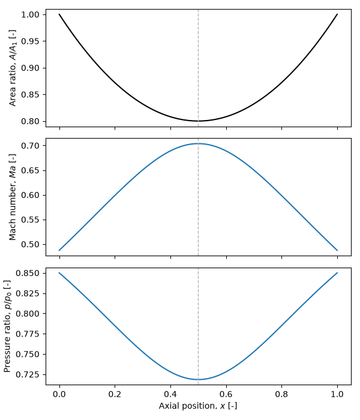

Note
Go to the end to download the full example code.
Isentropic nozzle analysis¶
This example solves the subsonic, isentropic flow through a nozzle of
prescribed area variation using a simple fixed-point (Picard) iteration on a
ember.block.Block flow field.
The flow is adiabatic and reversible, so the stagnation enthalpy \(h_0\) and entropy \(s\) are uniform along the duct. The operating point is fixed by the outlet static pressure: with \(s\) and \(h_0\) known, the outlet state – and hence the mass flow – follows directly, mass conservation sets the velocity distribution from the current density guess, and the energy equation \(h = h_0 - V^2/2\) updates the thermodynamic state for the next sweep. As with the Joule cycle example, every property evaluation goes through the equation of state, so the method is working-fluid independent.
import numpy as np
import matplotlib.pyplot as plt
import ember.block
import ember.fluid
Stagnation reservoir¶
We use a perfect gas and fix the reservoir (stagnation) state by its pressure
and temperature. The stagnation enthalpy and entropy are obtained with bare
ember.fluid calls: the set_* methods return density and internal
energy, which the get_* methods turn into the enthalpy and entropy that
the flow field is built from.
Prescribed area variation¶
The duct area relative to the inlet, \(A/A_1\), is prescribed as a symmetric parabola in the normalised axial coordinate: unit area at the inlet and exit, with a minimum (the throat) of a given depth at mid-length. The throat station is simply the location of minimum area.
ni = 101
x = np.linspace(0.0, 1.0, ni)
A_throat = 0.8 # Throat area ratio, A_throat / A1 (minimum, at mid-length)
# Symmetric quadratic with unit area at x = 0 and x = 1 and its minimum at the
# mid-length throat.
A_A1 = 1.0 - (1.0 - A_throat) * (1.0 - (2.0 * x - 1.0) ** 2)
i_throat = np.argmin(A_A1)
Initial guess¶
A Block with one entry per axial station holds the flow
field. We initialise it to the stagnation state everywhere (static enthalpy
equal to \(h_0\), so zero velocity), giving a uniform first guess for the
density.
def axial_velocity(V):
"""Pack a scalar axial velocity field into a (ni, 3) polar velocity array."""
zero = np.zeros_like(V)
return np.stack([V, zero, zero], axis=-1)
block = ember.block.Block(shape=(ni,))
block.set_fluid(fluid)
block.set_h_s(ho * np.ones(ni), s)
block.set_Vxrt(axial_velocity(np.zeros(ni)))
Outlet boundary condition¶
The operating point is set by the outlet static pressure. Because the entropy
and stagnation enthalpy are already known, the outlet state needs no guess:
\((p_\mathrm{exit}, s)\) fixes the density and enthalpy with a bare
ember.fluid call, the energy equation gives the outlet velocity, and
the product \(\rho V A\) is the mass flow – a single constant that holds
for the whole duct.
Picard iteration¶
Each sweep propagates the velocity to every station by mass conservation \(\rho V A = \text{const}\) (with the current density), then applies the energy equation to refresh the thermodynamic state. The velocity update is under-relaxed for stability, which also damps the change in static enthalpy. The loop ends once the velocity field stops changing.
relax = 0.5 # Under-relaxation factor on the velocity update
for sweep in range(200):
V_prev = block.V
rho = block.rho
V_target = mass_flux / (rho * A_A1) # Mass conservation on the current guess
V = V_prev + relax * (V_target - V_prev) # Under-relaxed update
block.set_h_s(ho - 0.5 * V**2, s)
block.set_Vxrt(axial_velocity(V))
if np.max(np.abs(V - V_prev)) < 1e-4:
break
print(f"Converged in {sweep + 1} sweeps")
print(f"Outlet static pressure: {block.P[-1]:.0f} Pa (target {P_exit:.0f} Pa)")
print(f"Throat Mach number: {block.Ma[i_throat]:.3f}")
print(f"Mach number stays subsonic: max Ma = {block.Ma.max():.3f}")
Converged in 45 sweeps
Outlet static pressure: 85000 Pa (target 85000 Pa)
Throat Mach number: 0.704
Mach number stays subsonic: max Ma = 0.704
Solution¶
The converged Mach number and static-to-stagnation pressure ratio are read straight off the block. We plot them against axial position alongside the prescribed area variation: the flow accelerates to its peak Mach number at the throat, where the pressure ratio is lowest.
Ma = block.Ma
P_Po = block.P / Po
fig, axs = plt.subplots(3, 1, sharex=True, figsize=(6, 7))
axs[0].plot(x, A_A1, "k-")
axs[0].set_ylabel("Area ratio, $A/A_1$ [-]")
axs[1].plot(x, Ma, "-")
axs[1].set_ylabel("Mach number, $\\mathit{Ma}$ [-]")
axs[2].plot(x, P_Po, "-")
axs[2].set_ylabel("Pressure ratio, $p/p_0$ [-]")
axs[2].set_xlabel("Axial position, $x$ [-]")
for ax in axs:
ax.axvline(x[i_throat], color="0.7", ls="--", lw=1.0) # Mark the throat
fig.tight_layout()
plt.show()

Total running time of the script: (0 minutes 0.175 seconds)